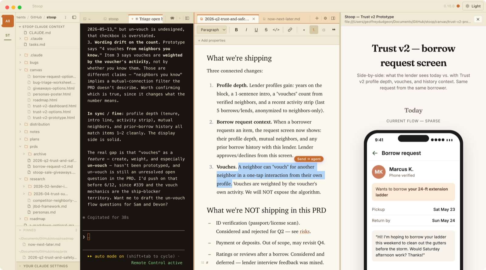
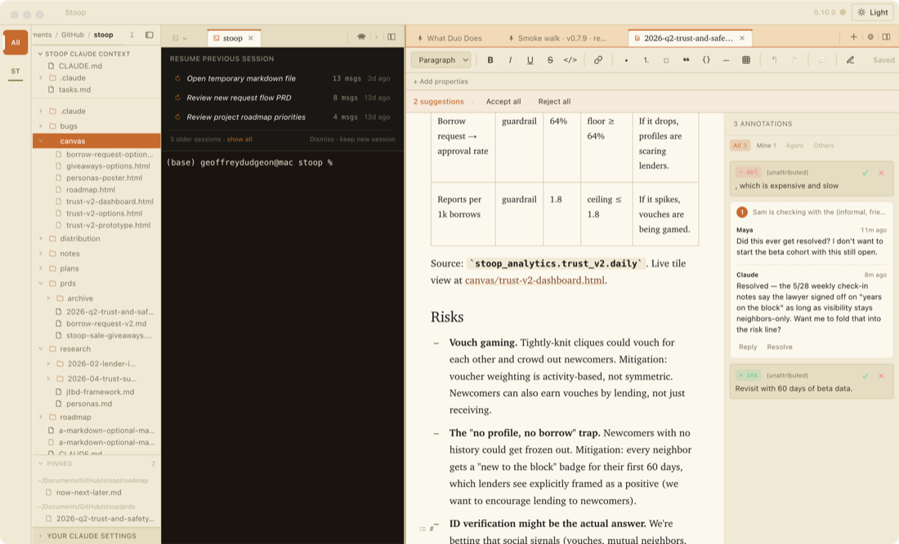
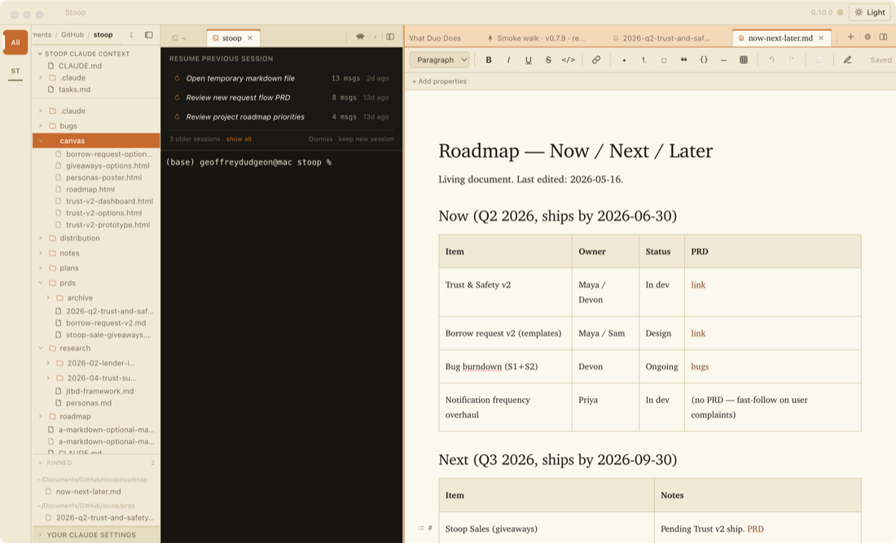
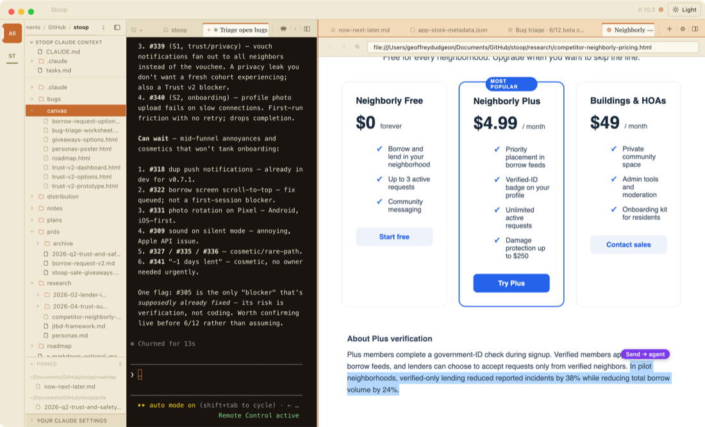
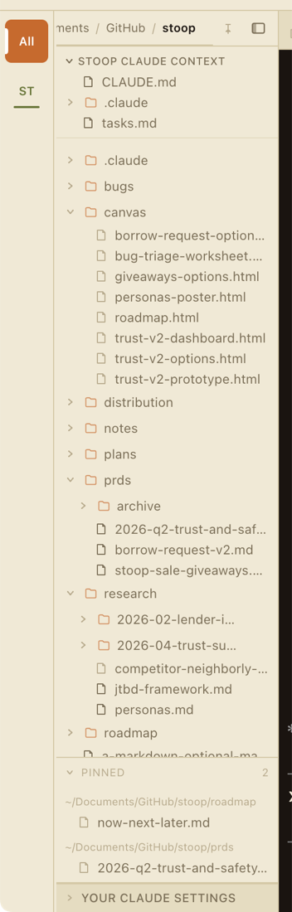

Duo gives Claude Code a file tree, a real browser, and an editor that feels like Google Docs — so working together never starts with explaining where things are.
Signed & notarized · Apple Silicon · Free forever · Nothing you write ever leaves your machine.

Duo is not an agent — it's a workspace for one. It's built primarily for product managers and other non-engineering knowledge workers who want to work with an agent the way they already work in Google Docs or Notion: beautifully, safely, and without learning the terminal or the file system first. The terminal is still there — Claude lives in it — but everything around the terminal is designed for someone who doesn't.
Everything Claude needs to see is already open — you're not describing your screen, you're sharing it.
Open any markdown file and it reads like a document, not source code — a toolbar, click-to-edit tables, comments in the margin. Flip on Suggesting mode and Claude's edits arrive as tracked changes you accept or reject. When Claude changes something you have open, the text glows briefly, so you see what moved without re-reading the page. A running version history means autosave never feels risky.

Each tab is a Claude conversation. Come back the next morning and your recent threads show up as clickable pills, so Monday picks up where Friday stopped. Schedule a session to run on a cadence — a daily morning review, say — and catch up on everything that happened while you were away from one Home board: Needs you, In progress, Done.

A real Chromium browser lives inside Duo, logins and all. Highlight anything on a page and a Send → agent pill appears — click it and the selection lands in your conversation with a note about where it came from. It reads a Google Doc, Sheet, Slides deck, or Figma file the way you're already logged into it. No connectors, no exports, no copy-paste.

The navigator finds files, flags what changed, and gets your team's shared project onto your machine with a pasted link — no git required, though the git awareness (branches, worktrees, GitHub links) is there when you want it. For work that's more web than document, point Duo at a folder of notes and it becomes a vault: linked notes with [[autocomplete]], and a rollup that turns "what's the status of everything" into a live dashboard instead of a doc you update by hand.

The details that make it feel like your desk, not a new tool to learn.
Ask for a dashboard or a triage worksheet and Claude builds an interactive HTML page — buttons and radio groups that send your clicks straight back into the conversation.
Split view, pinned tabs, saved workspaces, a second window when one screen isn't enough. Quit and reopen — terminals, files, and layout all come back.
Every save gets a durable version history with one-click restore. Spin up a separate worktree to try something risky without touching your main copy. ⌘Z reopens anything you closed by accident.
Everything above, you can do with a mouse and keyboard — and so can Claude. A command-line tool called duo gives it the same hands you have: open a file, click a button, read what's on screen, drive the browser. Ask in plain English and the request gets carried out, not translated into a list of steps for you to run yourself.
# "summarize the page open in my browser" $ duo tabs $ duo dom ".pricing-table" --text # "open the roadmap and jump to open questions" $ duo open roadmap.md $ duo doc goto "Open questions" # "roll up every open task across my projects" $ duo rollup render --html
MIT licensed, source on GitHub — fork it, audit it, or build your own distro pack for your team.
Nothing is captured or sent anywhere. The only network call Duo makes on its own is checking for app updates.
Claude Code is the supported harness today. The architecture is BYO-harness by design.
macOS 13+ on Apple Silicon. Signed, notarized, and keeps itself up to date.
Intel Mac? Stay on the v0.6.6 release. Tell me what's missing →